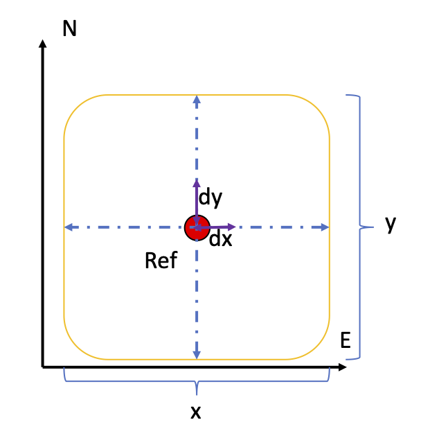

Earthquake Location
The module Earthquake analysis allows you to analyse waveforms, polarization analysis of seismograms 3-components, calculate different magnitudes and finally locate an event and estimate the focal mechanism (First Polarity). We will walk through all of the functionality following this scheme:
Pick Event
From top to bottom in the left side of the window you will see:
-
Event Info: This small box let enter information about an event, in this way you can plot the theoretical arrivals (ak-135F) with respect your seismograms. Plot arrivals requires that you have correctly loaded your metadata.
-
Files Directory: By clicking in this button you will place the path of your files (miniseed). Click on Read Files to load in an inner database the path to your files. With this action you will be ready to Process and Plot the seismograms. Remember click on Read Files every time you change the folder. Option scan means, scan the whole tree of folders from the root one, to include all possible mseed files paths in the database. Robust means that is going to check that every file in the selected folder is a valid mseed file.
-
Metadata File: By clicking in this button you will place the path to you metadata file. The metadata file must contain the information of all of the stations seismograms you want to analyse (metadata must be a xml or dlsv).
-
Start Time and End Time: The time boxes can be selected checking “Trim Time”. If you choose this option all the seismograms will be cut in accordance with the selected time window. Use the shortcuts "Q" and "E" to set over the plot automatically the trim stat time and endtime.
-
Stations Info: will deploy a table with the fundamental information of the seismograms.
-
Phase box: This combo box allow the selection of specific phases for picking it in the seismograms.
-
Waves box: You can choose Body, surface, coda or noise. With this selected you can highlight a time window of the seismogram for further analysis. For example Mw Magnitude that requires a time window of body wave on many seismograms.
-
Net, Station and Channel: You can fill this boxes (also using wildcards such as * or BH?) to select specific files from your files folder (check “select files”).
-
Stations Map: will show you the location of the stations that corresponds to the seismograms of your folder. The seismograms metadata must match with the metadata information.
-
Rotate: This option will rotate all your station - 3 components (channels must be named N,E,Z) to the Great Arc Circle taking the reference the data of Event info tab. Check "Use this Ang" to rotate the components a specific angle.
-
Cross: This button will compute the cross-correlation (cc) or the autocorrelation of all processed seismograms with respect the reference “Ref”, the number of the seismogram from top to bottom.
-
Process and Plot: This action will read the seismograms from the database of paths to your seismograms, created from your folder tree (database already built using Read Files) and will carry out the processing from the established “MACRO”. Further details in MACRO section "Macros".

Additional options from the toolbar are:
File
File: New location will clean the picks that are saved automatically for be ready to compute new picking/location. File: Write Files will write in the folder you select the processed seismograms.
File: Open Settings will open a window with the specific parameters of the subprocess that you can carry out in this module (sta/lta, wavelet detection, spectrogram, entropy…).

Actions
Actions: Picks will open the file with the information of your picks. You can also open the file from here. Shortcut "Ctr + u"
Actions: Macro will deploy a window with all of the processing options. All of the processing options will be applied once you press the button Processing and Plot. Shortcut "Ctr + l"
Action: Detect event will associate the automatic picks carried out by the wavelet picker ant will declare an event. The events will be shown in the seismograms window.
Actions: Run Picker will carry out the automatic detection/classification of P- and S- waves from the previously loaded “Neural Network”. You must have three components per stations (named N,E,*Z). BE CAREFUL this operation is computationally demanding.
Actions: Run Autoloc will detect events using a associated picker based on the Continuous Wavelet Transform (go to File Open Settings to set Num Cycles, Fmin and Fmax) moreover you need to set Detection trigger options Threshold to trigger a pick, number of picks that coincide in different seismograms to declare an event and time window over the clustering of pick is going to be used (For example 40 s means that all seismograms around same time window of 40 s is going to be associated to the same event.
Once an event is declared it is chopped the seismograms run the autopick (P and S wave) using the Neural Network and run and automatic location. If you want to use a local model to locate be sure that you have the travel times calculated. All locations will be storage in ./isp/earthquakeAnalysis/location_output/all_locations.
Action: Clean Selection will remove an specific seismogram time window selection, such as Body wave, see the combo box selected and will delete from the selections.
Action: Remove all selections
Action: Clean Events Detected
Actions: Magnitude Calculator will open a window in which you can compute different magnitudes. For open this you must have estimated an event and have selected the time-windows in the seismograms that you want the magnitudes be calculated.
Action: Open Earth Model Viewer will open a tool to visualize 3D velocity models. For visualize an Earth Model you need the binary files (buf and hdr) created in the tab Event location.
Action: Data availability will plot the data availability (backlines) for each station/component of the database loaded from your folder tree.
Action: Search in Catalog (see first figure) is a widget designed to plot your catalog and select an event to search in your project. The catalog must be a csv file with this header:
Date;Time;Latitude;Longitude;Depth;Magnitude;mag_type
01/01/2007;02:03:03;34.9608;-4.0459;12.0;2.6;Mw
You can find an example in isp/examples/catalog/catalog_resume. To facilitate the selection of events, the user can press "t" over the epicenter in the map to hilight it in the table. Finally, Pressing button "Select Event" the information is sent to the trim starttime and endtime and to the Event Box. Ready to reload your project to make the search of the event!
Compute
Compute: STA/LTA from all processed seismograms and will plot the result together. STA/LTA takes the parameters from Parameters Settings.
Compute: CWT (CF) from all processed seismograms and will plot the result together. CWT takes the parameters from Parameters Settings.
Compute: Envelope from all processed seismograms and will plot the result together.
Compute: Spectral Entropy from all processed seismograms and will plot the result together. Spectral entropy is estimated in small time windows see Parameters Settings. . All Seismograms: Plot together all seismograms.
Stack: Compute (linear, nth-root or PWS) stack of all processed seismograms. Set your choice in File/Open Settings.
Go
Will ship you to the rest of ISP modules (RFs, Array analysis….).
Multimedia Material (Pick Event)
The following video shows a basic analysis of an earthquake
Polarisation Analysis
The Polarization Analysis is designed to analyze the three seismograms components from a station. You can freely rotate using the rotation RT or the LQT your NEZ components an angle (Rot Angle) with an Incidence angle (Inc Angle).
The Particle motion of the processed seismogram is view clicking in “Plot Polarization”. This option will plot all the time window in a 3D view and in three 2D plot views.
If you want to make a sliding window analysis of the polarization press “Polarization Analysis”. This will carry out a polarization analysis on windows length and frequency bandwidth specified by the user over the full analyzed seismogram.

For a full particle motion analysis, press “Plot Polarization”. This will open another window with a 3D particle motion on the left and the three characteristic views on the right.

Event Location and Focal Mechanism (FP)
In the Event Location Frame the user can configure the velocity grid 1D/3D model, locate earthquakes and compute Focal Mechanisms.

First it is needed to set a Velocity grid framework (Grid reference and transformation type are mandatory). For now is only available Transformation Simple and Global.
Next, the Grid dimensions (Grid Size). Case 2D the dimension always must be 2 and the grid reference is referred to the corner SW. Case 3D the grid reference is the center of the Grid. Choose the grid type and the wave and then generate the velocity model binary files by clicking “Generate Velocity Grid”. Please follow the scheme of the next figure to set correctly your grid frame.

Once the binary files are generated you can check the results in the folder:
ISP/earthquakeAnalysis/location_output/model
- Where and how place the velocity models?
2D models (see example)
LAYER 0.0 6.1 0.0 3.49 0.0 2.7 0.0 LAYER 11.0 6.4 0.0 3.66 0.0 2.7 0.0 LAYER 24.0 6.9 0.0 3.94 0.0 2.7 0.0 LAYER 31.0 8.0 0.0 4.57 0.0 2.7 0.0
ISP/earthquakeAnalysis/location_output/local_models
3D models
ISP/earthquakeAnalysis/location_output/model3D (see example)
Every depth layer must be placed in files called, for example
For the P wave --> layer.P.mod5.mod For the S wave --> layer.S.mod5.mod
Which means that inside this file there is the grid for the layer at depth 5km.
The layer must be a matrix with the values in the rows from top to bottom S to N and from left to right E to W. That's mean following the next example that the file corresponding to a depth layer 5km "layer.P.mod5.mod" could be like this:
4.5759 4.5735 4.5707 4.5677 4.5760 4.5755 4.5766 4.5670 ...... ...... ...... ...... 4.6800 4.650 4.67300 4.5678
This matrix means that, for example corresponds to geographic points (separated in cells of, dx dy of 0.5 x 0.5 degrees: Warning grid cells must be [dx = dy = dz] for a correct interpretation.
(-10.0,34) (-9.5,34) (-9.0,34) (-8.5,34) (-10.0,34.5) (-9.5,34.5) (-9.0,34.5) (-8.5,34.5) ........ ......... ......... ......... (-10.0,40.0) (-9.5,40.0) (-9.0,40.0) (-8.5,40.0)
The most important step is to generate the travel-times for all the stations inside the maximum distance the user determine. Please be sure that you have load previously the metadata (this Is necessary to associate your picks with your station coordinates.
The generated travel-times will save in
ISP/earthquakeAnalysis/location_output/time, for example with the following name l"ayer.P.EBAD.time.buf"
Once you have complete the above steps you can locate the earthquake and the focal mechanism. The above operation are just necessary to be implemented the first time you use a specific Earth model.
**For global is not necessary generate the velocity grid and travel times.
To visualize the detailed Probability Density Function, press “Plot PDF” once you have already carried out the location.

Moreover, if you have picked the seismic phases and have been designated the polarity in “Event frame” , you will be able to obtain the Focal Mechanism (it uses the subprogram FocMec)
Earth model Viewer
The Earth Model Viewer is intended to help to visualize 3D Earth velocity models as Fig 2.8. Just select the binary file *.buf (can be generated from the model as described in previous section). Next, select the depth of the layer, the cross sections in longitude and latitude and the press plot.

Magnitudes Estimation
With the Magnitude Estimation you can calculate: Local Magnitude (ML) or Body-wave (mb), Surface-wave (Ms), Moment Magnitude (Mw) and Coda Magnitude.
To estimate the magnitudes you have to select a time window of body, surface or coda on the seismograms.
- Units must be on velocity, so you must remove the response of the instrument to velocity, previously to open the Magnitudes window. For Local magnitude you have to remove the response of Wood-Anderson instrument.
- The hypocenter must be already calculated. The program will read the *.hyp file before open Magnitudes window.
If you place 0.00 on all parameters of local or coda magnitudes, the program will calculate these magnitude with default parameters as follows:
Coda Magnitude:
Values for California a = 2.0; b = 0.0035; c= -0.87
Mc_value = anp.log10(t_coda)+bdist+c
Local Magnitude:
a = 1.11; b =0.00189; c= -2.09
ML_value = np.log10(max_amplitude)+anp.log10(dist)+bdist+c
Briefly, Once you have open the Magnitude Window, select the magnitudes you want to compute and run the computation.
In the upper panel it is shown the spectrum of the body waves and the fit to calculate the moment magnitude. In the bottom panel is shown the histograms of all magnitudes (the result of the magnitudes for all seismograms for all kind of magnitudes) and on the left an additional plot used to visualize the dispersion of the results.